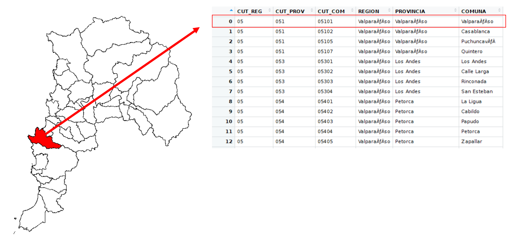

Tablas de atributos y bases de datos espaciales
Componentes de la información vectorial
La información espacial representada a través de un modelo vectorial tiene la particularidad de estar conformada por un componente geométrico y un componente descriptivo.
El componente geométrico está dado por la tipología del dato, es decir su geometría (línea, punto, polígono), su localización y las relaciones espaciales entre los objetos, y el componente descriptivo estará dado por la tabla de atributos que contiene el dato espacial.
Esta tabla de atributos es fundamental al momento de operar el dato espacial en el SIG ya que esta contiene todos los atributos que componen el dato.

Ilustración: LABGRS, 2020.
Ver video tutorial interfaz tabla de atributos
Obra publicada con Licencia Creative Commons Reconocimiento Compartir igual 4.0